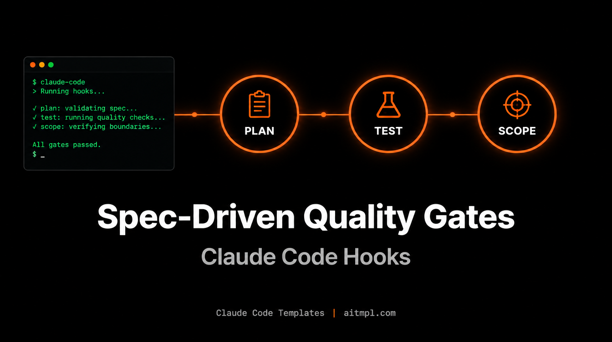

Installation
Install all three gates with the Claude Code Templates CLI:
npx claude-code-templates@latest --hook quality-gates/plan-gate --hook quality-gates/tdd-gate --hook quality-gates/scope-guardEach hook copies its shell script into .claude/hooks/ and registers itself in .claude/settings.json.
The Problem: Fast Agents Skip the Boring Parts
Claude Code is happy to jump straight into editing. That is great for small fixes and risky for anything bigger: no written plan, no tests, and a diff that quietly touches files nobody asked about. The three quality-gate hooks, adapted from the Spec-Driven Development methodology in pm-workspace (MIT), add a checkpoint at each stage.
The Three Gates at a Glance
| Hook | Event | Behavior | Question it answers |
|---|---|---|---|
plan-gate | PreToolUse (Edit, MultiEdit, Write) | Warns, never blocks | Is there a recent spec? |
tdd-gate | PreToolUse (Edit, MultiEdit, Write) | Blocks (exit 2) | Does this file have a test? |
scope-guard | Stop | Warns, never blocks | Did the diff stay inside the spec? |
Gate 1: Plan Gate
Before Claude edits a source file (.ts, .py, .go, .rs and a dozen more extensions), the hook looks for any *.spec.md modified in the last 14 days. If none exists, it prints a reminder to write a specification first. It is deliberately non-blocking, so it nudges without getting in the way.
Plan Gate: No recent approved spec found (.spec.md modified in last 14 days).
Consider creating a specification before implementing.
(Warning only — does not block the edit)Gate 2: TDD Gate
This is the only hard gate. When Claude tries to edit production code, the hook searches for a matching test file next to it, in sibling test/, tests/ or __tests__/ folders, and then project-wide. It recognizes MyClassTest.ext, my-class.test.ext, my_class_test.ext and test_my_class.ext. If nothing matches, the edit is rejected with exit code 2 and Claude sees the reason:
TDD GATE: No tests found for 'invoice.ts'. Write tests BEFORE implementing production code.
Create: invoiceTest.ts or invoice.test.tsTests, configs, migrations, DTOs, docs and infrastructure files are skipped automatically, so the gate only pushes on real production code. Claude's natural response is to write the test first, which is exactly the point.
Gate 3: Scope Guard
When Claude finishes a turn (the Stop event), the hook finds the newest .spec.md touched in the last hour, reads its "Files to Create/Modify" section, and compares it with git diff (staged and unstaged). Files outside the declared list are reported on stderr. Tests, markdown, JSON/YAML, lockfiles and Docker files are ignored.
SCOPE GUARD: Files modified OUTSIDE the scope of active spec (invoice.spec.md):
- src/billing/legacy-tax.ts
Review if these changes are intentional or if the agent expanded the scope.Step-by-Step Workflow
Here is the full loop on a concrete task: add invoice PDF export.
1. Write the spec
Ask Claude to draft specs/invoice-export.spec.md. Include a section named exactly "Files to Create/Modify", because Scope Guard parses it:
# Invoice PDF export
## Files to Create/Modify
- src/billing/invoice-export.ts
- src/billing/invoice-export.test.ts
- src/routes/invoices.ts2. Plan Gate goes quiet
With a fresh spec on disk, Plan Gate has nothing to warn about. Skip step 1 and you will see the warning on the very first edit.
3. Tests first, enforced by TDD Gate
If Claude tries to create invoice-export.ts first, the edit is blocked. It writes invoice-export.test.ts, then retries and succeeds.
4. Scope Guard reviews the result
When Claude stops, Scope Guard compares the diff to the spec. If Claude also refactored legacy-tax.ts, you get a warning before you commit and can revert it or update the spec.
Tuning and Caveats
.claude/settings.json (or keep it in a project-level settings file only where you want it). Plan Gate reads the file path from the CLAUDE_TOOL_INPUT_FILE environment variable; if your Claude Code version does not set it, the hook exits silently, so verify it fires in your setup.
- Scope Guard only works when a spec was modified in the last 60 minutes and has a "Files to Create/Modify" section.
- The 14-day window in Plan Gate is a single
-mtime -14in the script, easy to change. - You can install them individually: Plan Gate and Scope Guard are low-friction, TDD Gate is the strict one.
Conclusion
Individually each hook is a small shell script. Together they give Claude Code a lightweight spec, test, scope pipeline: plan before you build, test before you implement, and verify before you commit. Install them with one command and adjust the strictness to your team.
Created by Daniel Ávila